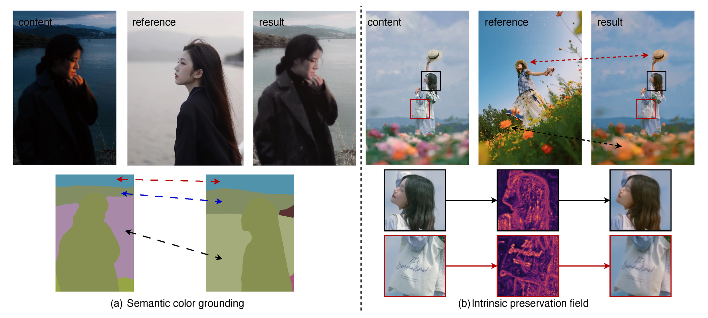

Reference-Based Color Transfer
SAGE-Color
Semantic Appearance Grounding for Reference-Based Color Transfer
SAGE-Color transfers palette, tone, contrast, and region-level appearance from a reference image while preserving the content image's geometry, identity, and fine structure.

Problem
Color transfer without layout transfer
Reference images contain useful palette, tone, contrast, and region-level appearance, but they also contain their own geometry. SAGE-Color separates these two roles: the content image keeps spatial authority, while the reference image supplies appearance evidence.
Architecture
Semantic appearance grounding
The final model combines a dense content path, a reference appearance lane, and a structure-preservation lane inside an MMDiT flow editor.

Model
Method
The content image provides spatial authority through latent concatenation. The reference image is converted into a Semantic Color Gallery with global, regional, and local chromatic evidence. A content-only Intrinsic Preservation Field attenuates unsafe reference residuals in structure-sensitive regions.
Evaluation
Results
On Colorist-Bench-1K, SAGE-Color improves reference color fidelity while keeping content-compatible reconstruction.

Release
Run SAGE-Color
The GitHub repository contains inference, training, environment setup, and reproducibility scripts. The released checkpoints are hosted on Hugging Face so the code repository stays lightweight.
git clone https://github.com/chenxib/sage-color.git
cd sage-color
conda env create -f environment.yml
conda activate sage-color
bash scripts/bootstrap_external_diffusers.sh
pip install -r requirements.txt
bash scripts/download_weights.sh
bash scripts/download_required_models.sh
CUDA_VISIBLE_DEVICES=0 \
CONTENT_IMAGE=path/to/content.png \
REFERENCE_IMAGE=path/to/reference.png \
OUTPUT_IMAGE=outputs/sage-color/sample.png \
bash scripts/final_model/bash/infer.sh